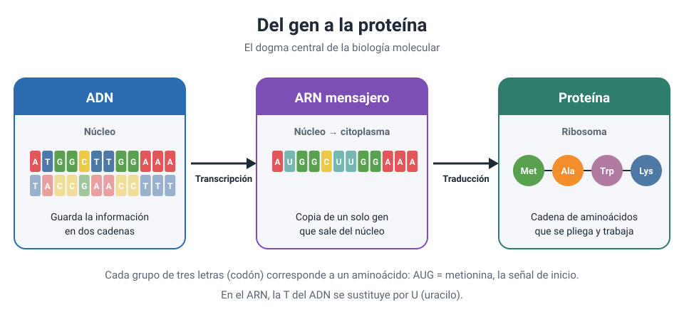

El «dogma central»
En 1958 Francis Crick resumió el flujo de información en la célula con una idea que llamó, medio en broma, dogma central:
ADN → ARN → proteína
El ADN es el archivo que no sale del núcleo. Para usar una receta, la célula hace una copia de trabajo en ARN y la lleva a la «cocina», donde se fabrica la proteína.

Paso 1: transcripción
Una enzima llamada ARN polimerasa se coloca al inicio de un gen y va copiando una de sus hebras en una molécula de ARN mensajero (ARNm). Después, la célula recorta los intrones y une los exones (corte y empalme, en inglés splicing). Combinando exones de distintas maneras, un mismo gen puede dar lugar a varias proteínas.
Paso 2: traducción
El ARNm sale del núcleo y llega a los ribosomas, las máquinas que fabrican proteínas. Allí se lee en grupos de tres letras llamados codones. Cada codón corresponde a un aminoácido, la pieza básica de las proteínas, o a una señal de parada.
- Hay 64 codones posibles (4 × 4 × 4) y solo 20 aminoácidos, así que varios codones significan lo mismo. Por eso se dice que el código es «redundante».
- AUG marca el inicio y codifica el aminoácido metionina.
- UAA, UAG y UGA marcan el final.
Unas moléculas adaptadoras, los ARN de transferencia, llevan el aminoácido correcto a cada codón. El ribosoma los va encadenando y la cadena se pliega hasta tomar su forma tridimensional, que es la que determina su función.
Un código casi universal
El código genético es prácticamente el mismo en bacterias, plantas y personas. Por eso una bacteria puede fabricar insulina humana si se le introduce el gen correspondiente, algo que se hace industrialmente desde 1982. Hay pequeñas excepciones, por ejemplo en las mitocondrias.
Marshall Nirenberg y Heinrich Matthaei descifraron el primer codón (UUU = fenilalanina) en 1961, y el código completo se conoció hacia 1966.
Encender y apagar genes
Todas las células del cuerpo tienen casi el mismo ADN, pero una neurona no se parece en nada a un glóbulo rojo. La diferencia está en qué genes se usan. Proteínas reguladoras, marcas químicas sobre el ADN (ver Epigenética) y la forma en que se empaqueta la cromatina deciden qué recetas se leen en cada célula y en cada momento.
Por qué importa en medicina
Si un cambio en el ADN altera un codón, puede cambiar un aminoácido, crear una señal de parada prematura o desordenar la lectura. Eso explica muchas enfermedades genéticas, como verás en Mutaciones y variantes. También explica cómo funcionan algunos tratamientos nuevos, como las vacunas de ARNm o los fármacos que modifican el corte y empalme.
Fuentes
- Crick, F. H. C. (1958). On protein synthesis. Symposia of the Society for Experimental Biology, 12, 138–163.
- Nirenberg, M. W. y Matthaei, J. H. (1961). The dependence of cell-free protein synthesis in E. coli upon naturally occurring or synthetic polyribonucleotides. PNAS, 47, 1588–1602.
- MedlinePlus Genetics. How do genes direct the production of proteins?
- Alberts, B. et al. (2022). Molecular Biology of the Cell (7.ª ed.). W. W. Norton.